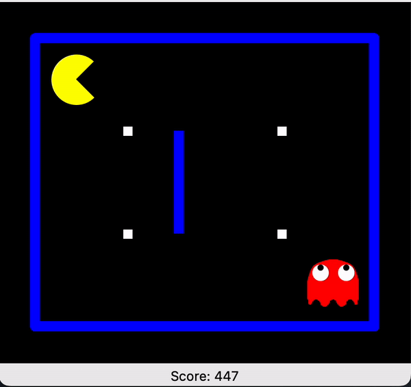
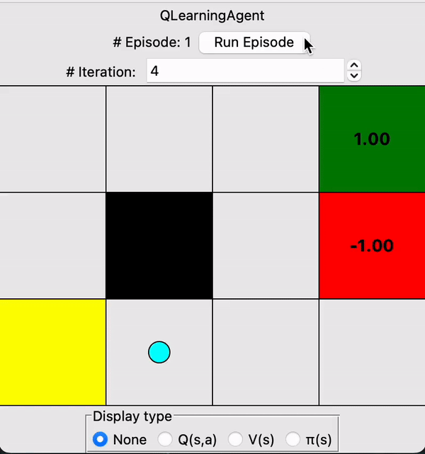
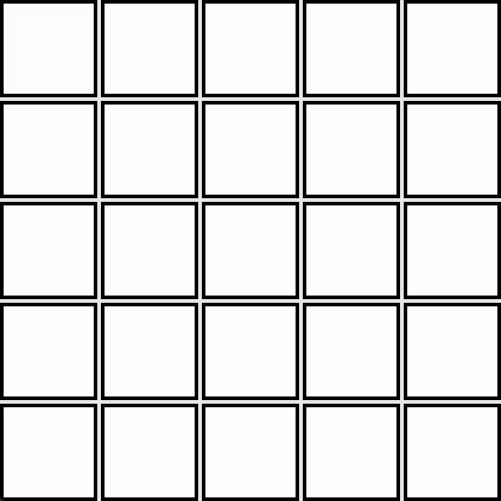
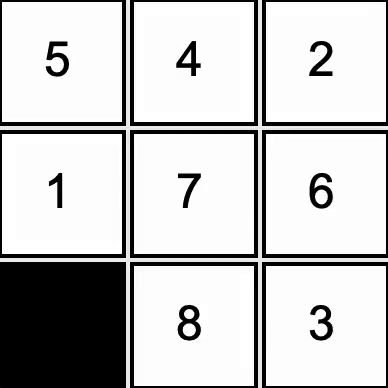

Jaxon Bailey
Software Engineer in NYC

Hi, I'm Jaxon.
I'm a software engineer and part-time master's student at the University of Pennsylvania. After living and working in Japan for the last 4 years, I have recently returned to NYC and am actively seeking a job or internship as a software developer here.
My skill set includes Python, Java, HTML/CSS, Javascript, React, jQuery, Bootstrap, and more. Recently, I've been delving into the AI space through my coursework at UPenn.
In my free time, you'll catch me cafe-hopping around the city, playing a game of riichi mahjong, going to gymnastics class, or planning where to travel next.
My projects

Implemented an approximate Q-learning agent (a subclass of the grid world Q-learning agent below).
This agent navigates through a game of Pacman, learning about its environment through a series of training episodes (not shown here) to learn the optimal policy, exploiting a weighted feature function that maps features of the environment to their values from the agent's POV.
Shown here are 10 consecutive games where the agent is acting based off the optimal policy it developed in training. The agent wins every game.
This agent navigates through a game of Pacman, learning about its environment through a series of training episodes (not shown here) to learn the optimal policy, exploiting a weighted feature function that maps features of the environment to their values from the agent's POV.
Shown here are 10 consecutive games where the agent is acting based off the optimal policy it developed in training. The agent wins every game.

Designed a Q-learning agent that learns through interactions with its stochastic environment
via trial & error.
Note that the agent prioritizes exploration early on, then it grows more confident with increasing iterations. Through trial & error, the agent gradually begins to favor the safer upper route which completely avoids the pitfall on the lower route.
At the end of the 30s gif, you can see the values assigned by the agent to each state in the grid, as well as the optimal policy for each state denoted by the arrows.
Note that the agent prioritizes exploration early on, then it grows more confident with increasing iterations. Through trial & error, the agent gradually begins to favor the safer upper route which completely avoids the pitfall on the lower route.
At the end of the 30s gif, you can see the values assigned by the agent to each state in the grid, as well as the optimal policy for each state denoted by the arrows.

Developed an AI domino player that employs the minimax algorithm to explore the states of the game and choose
the state most likely to lead to victory. I also implemented alpha-beta pruning to more efficiently explore the game tree.
By cutting of branches of the game tree that lead to less-than-optimal outcomes for the computer, computation time is reduced
and the computer can explore deeper branches of the game, more effectively searching for the best outcome.
In this game, the human player always places dominoes vertically, while the computer places them horizontally. The last player to succesfully place a domino on the board wins. The computer considers the "best" move to be that which leaves the most available domino placements for the computer and the least available domino placements for the human opponent.
In this game, the human player always places dominoes vertically, while the computer places them horizontally. The last player to succesfully place a domino on the board wins. The computer considers the "best" move to be that which leaves the most available domino placements for the computer and the least available domino placements for the human opponent.
Implemented A* search to find the shortest path between a pair of points on a two-dimensional grid, maneuvering around obstacles.
A* relies on a heuristic function to prioritize exploration of paths that are likely to be the shortest. For this project, I used the Euclidean distance between the start and end points as the heuristic function.
A* relies on a heuristic function to prioritize exploration of paths that are likely to be the shortest. For this project, I used the Euclidean distance between the start and end points as the heuristic function.

Developed a solver for the 8-tile puzzle. Implemented A* search with a Manhattan distance heuristic
to guide the AI toward a solution in a reasonable time.
The black square represents a blank space, into which the the AI can slide any of the four adjacent tiles.
The black square represents a blank space, into which the the AI can slide any of the four adjacent tiles.